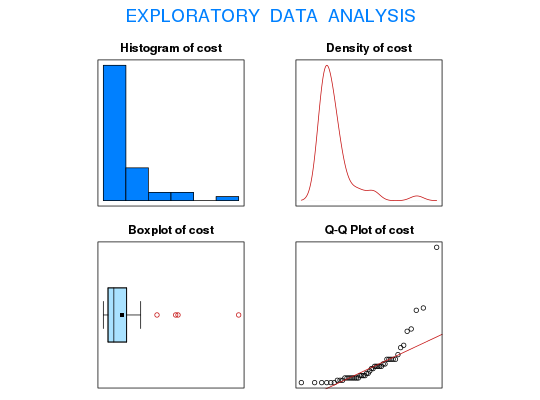

Data for Exercise 6.62
A data frame with 50 observations on the following 2 variables.
Alabama
Alaska Arizona Arkansas California
Colorado Connecticut Delaware Florida
Georgia Hawaii Idaho Illinois Indiana
Iowa Kansas Kentucky Louisiana Maine
Maryland Massachusetts Michigan Minnesota
Mississippi Missour Montana Nebraska
Nevada New Hampshire New Jersey New Mexico
New York North Carolina North Dakota Ohio
Oklahoma Oregon Pennsylvania Rhode Island
South Carolina South Dakota Tennessee Texas
Utah Vermont Virginia Washington West
Virginia Wisconsin WyomingKitchens, L. J. (2003) Basic Statistics and Data Analysis. Duxbury
str(Statelaw)#> 'data.frame': 50 obs. of 2 variables: #> $ State: Factor w/ 50 levels "Alabama","Alaska",..: 1 2 3 4 5 6 7 8 9 10 ... #> $ cost : int 5 4 8 3 59 4 9 3 11 8 ... #>attach(Statelaw) summary(cost)#> Min. 1st Qu. Median Mean 3rd Qu. Max. NA's #> 1.000 3.000 5.500 8.957 11.000 59.000 4 #>EDA(cost)#> [1] "cost" #>#> Size (n) Missing Minimum 1st Qu Mean Median TrMean 3rd Qu #> 46.000 4.000 1.000 3.000 8.957 5.500 7.571 11.000 #> Max. Stdev. Var. SE Mean I.Q.R. Range Kurtosis Skewness #> 59.000 10.696 114.398 1.577 8.000 58.000 8.676 2.705 #> SW p-val #> 0.000 #>#> #> One-sample Sign-Test #> #> data: cost #> s = 15, p-value = 0.05864 #> alternative hypothesis: true median is less than 8 #> 95 percent confidence interval: #> -Inf 8 #> sample estimates: #> median of x #> 5.5 #> #>#> Conf.Level L.E.pt U.E.pt #> Lower Achieved CI 0.9481 -Inf 8 #> Interpolated CI 0.9500 -Inf 8 #> Upper Achieved CI 0.9730 -Inf 8 #>detach(Statelaw)